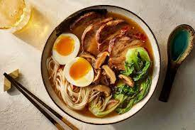

Ramen

Description
Ramen is an insanely good dish that can be made in many different ways. Whether it's made with a broth, eaten dry, or reheated from a premade meal, it will always be bussin.
Although the noodles can be an enjoyable dish alone, here is a basic recipe to upgrade your boring ramen meals.
Ingredients
- Ramen noodles (whether its packaged or homemade doesn't matter)
- chicken
- green onions
- soy sauce
Steps
- Put noodles in a pot with water and bring to a simmer
- if chicken is not cooked, preheat overn to 400 degrees, season chicken lightly with salt, and cook for 45 mins
- dice green onions while waiting for noodles/chicken
- once noddles are soft, put desired serving in a separate bowl and add light amount of onions and chicken(water in bowl optional)
- add 1-2tsp soy sauce to bowl
- lightly stir contents and enjoy!